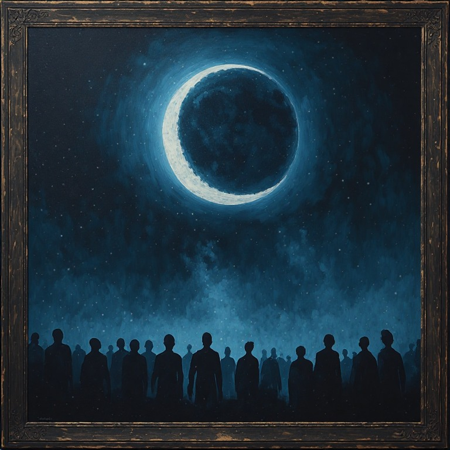
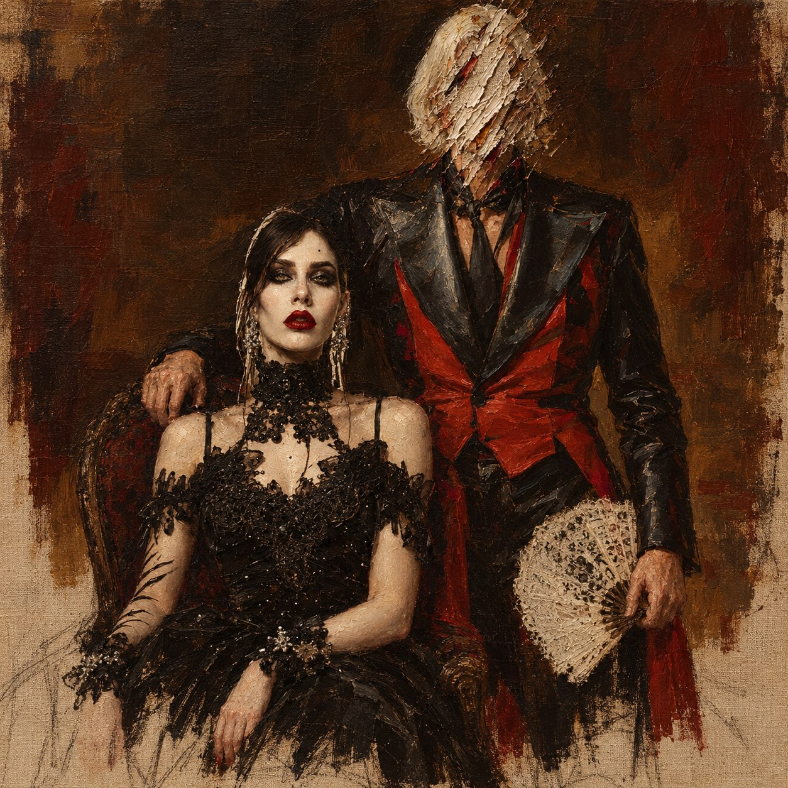

Huile sur toile — Francis Ruiz Verde


… la nuit du 14 ? du 15 ? Je ne sais plus. La lune encore. Toujours la lune qui se ferme comme un œil.
Ils disent que les Anciens dorment. Ils ne dorment pas. Ils attendent. Je les entends se retourner sous la terre, sous la ville, dans les tuyaux, dans les murs.
La Géhenne n'est pas une fin. C'est un appel. Personne ne répond Quelqu'un répond déjà.
Les fous du Sabbat le savent mieux que nous. Ils chantent ce que nous refusons d'entendre. — Non. Ce n'est pas le Sabbat qui m'inquiète.
C'est lui.
L'un des nôtres. L'un des plus hauts. Il sourit à l'Élysée, il serre les mains qu'il faut. Je n'ai pas de preuve. J'ai des dates. J'ai des caisses qui ne pèsent pas ce qu'elles devraient peser.
Il était mielleux, avant. Mielleux et vain, il fallait le flatter pour qu'il écoute. Depuis l'été il est agité. Il ne finit plus ses phrases. Il ne se souvient pas de ce qu'il m'a dit la veille. L'autre soir il m'a appelé par un nom que je n'ai pas porté depuis cent ans.
Certains soirs je ne le reconnais plus. Ce sont ses yeux Ses yeux ne sont pas à lui.
J'ai voulu le peindre, pour me souvenir de son vrai visage. Le visage refuse. J'ai tout gratté.
Trois nuits de suite, le même rêve : un serpent qui avale la lune.
Si quelqu'un trouve ceci : ne vous fiez pas aux visages.
— F.